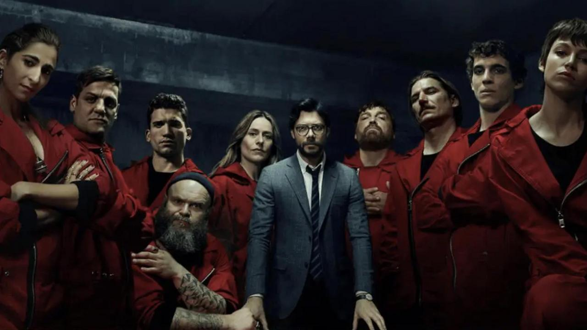
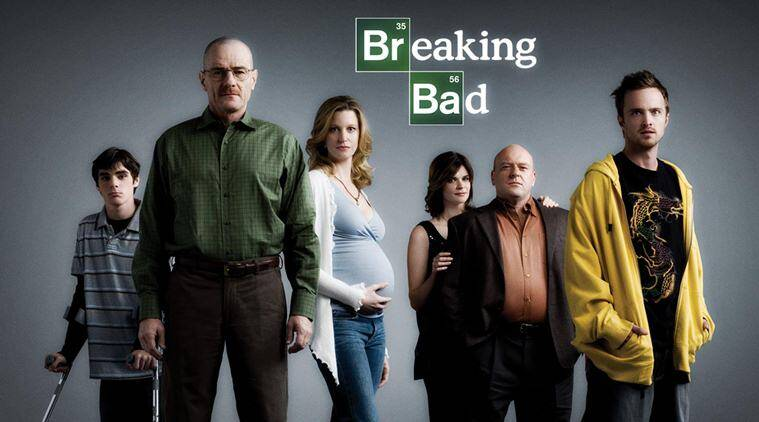
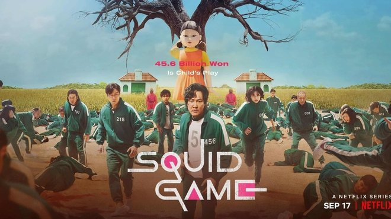

Eight thieves hold hostages in Spain's Royal Mint, while a criminal mastermind manipulates the police into carrying out his

Walter White, 50, is a high school chemistry teacher in New Mexico. To raise money to support his family, Walter uses his knowledge of chemistry to manufacture and sell crystal meth.

Birmingham, in 1919. A family gang reigns over a district of the town: the Peaky Blinders, so named for the blades of razor they hide in the visor of their cap.

People in financial difficulty are invited to a mysterious survival competition. Participating in a series of traditional games for kids, but with deadly twists, they risk their lives for a large sum of money

In 1983, in Hawkins, Indiana, Will Byers disappeared from his home . His friends then embark on a search full of pitfalls to find him. While searching for answers, the boys encounter a strange young girl on the run.

By Adam Doming